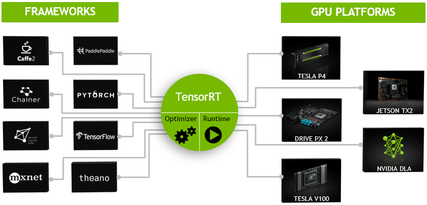

TensorRT
高性能的深度学习推理优化器
Posted on 12.2, 2020
0.主页
TRT DOCUMENTATION >
NVIDIA 超级公开课 >
1.简介
TensorRT是一个高性能的深度学习推理（Inference）优化器，可以为深度学习应用提供低延迟、高吞吐率的部署推理。
TensorRT可用于对超大规模数据中心、嵌入式平台或自动驾驶平台进行推理加速。TensorRT现已能支持TensorFlow、Caffe、Mxnet、Pytorch等几乎所有的深度学习框架，
将TensorRT和NVIDIA的GPU结合起来，能在几乎所有的框架中进行快速和高效的部署推理。
TensorRT* 是一个C++库，从 TensorRT 3 开始提供C++ API和Python API，主要用来针对 NVIDIA GPU进行 高性能推理（Inference）加速。
现在最新版TensorRT是7.0版本。（因为torch的onnx和tensorRT的onnx在1.1以后和6.0以后是混乱的，暂时无解。所以我们选择PyTorch1.1和TensorRT6.0进行实验。）

可以认为tensorRT是一个只有前向传播的深度学习框架，这个框架可以将 Caffe，TensorFlow的网络模型解析，
然后与tensorRT中对应的层进行一一映射，把其他框架的模型统一全部 转换到tensorRT中，然后在tensorRT中可以针对NVIDIA自家GPU实施优化策略，并进行部署加速。

目前TensorRT4.0 几乎可以支持所有常用的深度学习框架，对于caffe和TensorFlow来说，tensorRT可以直接解析他们的网络模型；
对于caffe2，pytorch，mxnet，chainer，CNTK等框架则是首先要将模型转为 ONNX 的通用深度学习模型，然后对ONNX模型做解析。而tensorflow和MATLAB已经将TensorRT集成到框架中去了。
ONNX （Open Neural Network Exchange ）是微软和Facebook携手开发的开放式神经网络交换工具，也就是说不管用什么框架训练，只要转换为ONNX模型，就可以放在其他框架上面去inference。
这是一种统一的神经网络模型定义和保存方式，上面提到的除了tensorflow之外的其他框架官方应该都对onnx做了支持，而ONNX自己开发了对tensorflow的支持。
从深度学习框架方面来说，这是各大厂商对抗谷歌tensorflow垄断地位的一种有效方式；从研究人员和开发者方面来说，这可以使开发者轻易地在不同机器学习工具之间进行转换，并为项目选择最好的组合方式，加快从研究到生产的速度。
现在tensorRT支持的层有：
Activation: ReLU, tanh and sigmoid
Concatenation : Link together multiple tensors across the channel dimension.
Convolution: 3D，2D
Deconvolution
Fully-connected: with or without bias
ElementWise: sum, product or max of two tensors
Pooling: max and average
Padding
Flatten
LRN: cross-channel only
SoftMax: cross-channel only
RNN: RNN, GRU, and LSTM
Scale: Affine transformation and/or exponentiation by constant values
Shuffle: Reshuffling of tensors , reshape or transpose data
Squeeze: Removes dimensions of size 1 from the shape of a tensor
Unary: Supported operations are exp, log, sqrt, recip, abs and neg
Plugin: integrate custom layer implementations that TensorRT does not natively support.
基本上比较经典的层比如，卷积，反卷积，全连接，RNN，softmax等，在tensorRT中都是有对应的实现方式的，tensorRT是可以直接解析的。
<<<收缩
基本上比较经典的层比如，卷积，反卷积，全连接，RNN，softmax等，在tensorRT中都是有对应的实现方式的，tensorRT是可以直接解析的。
但是由于现在深度学习技术发展日新月异，各种不同结构的自定义层（比如：STN）层出不穷，所以tensorRT是不可能全部支持当前存在的所有层的。那对于这些自定义的层该怎么办？
tensorRT中有一个 Plugin 层，这个层提供了 API 可以由用户自己定义tensorRT不支持的层。如下图：
这就解决了适应不同用户的自定义层的需求。
2.优化方式
TensorRT的优化方式：TensorRT优化方法主要有以下几种方式，最主要的是前面两种。
◦层间融合或张量融合（Layer & Tensor Fusion）
如下图左侧是GoogLeNetInception模块的计算图。这个结构中有很多层，在部署模型推理时，这每一层的运算操作都是由GPU完成的，
但实际上是GPU通过启动不同的CUDA（Compute unified device architecture）核心来完成计算的，CUDA核心计算张量的速度是很快的，
但是往往大量的时间是浪费在CUDA核心的启动和对每一层输入/输出张量的读写操作上面，这造成了内存带宽的瓶颈和GPU资源的浪费。
TensorRT通过对层间的横向或纵向合并（合并后的结构称为CBR，意指 convolution, bias, and ReLU layers are fused to form a single layer），使得层的数量大大减少。
◦数据精度校准（Weight &Activation Precision Calibration）
大部分深度学习框架在训练神经网络时网络中的张量（Tensor）都是32位浮点数的精度（Full 32-bit precision，FP32），
一旦网络训练完成，在部署推理的过程中由于不需要反向传播，完全可以适当降低数据精度，比如降为FP16或INT8的精度。更低的数据精度将会使得内存占用和延迟更低，模型体积更小。
INT8只有256个不同的数值，使用INT8来表示 FP32精度的数值，肯定会丢失信息，造成性能下降。不过TensorRT会提供完全自动化的校准（Calibration ）过程，
会以最好的匹配性能将FP32精度的数据降低为INT8精度，最小化性能损失。关于校准过程，后面会专门做一个探究。
◦Kernel Auto-Tuning
◦Dynamic Tensor Memory
◦Multi-Stream Execution

3.安装
仔细认真看官方指导，基本上按照官方的指导肯定能安装成功。 https://arleyzhang.github.io/articles/7f4b25ce/